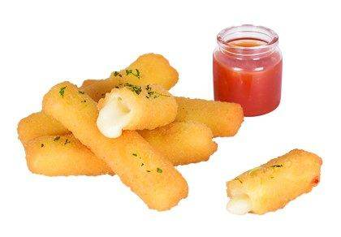
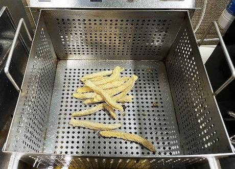
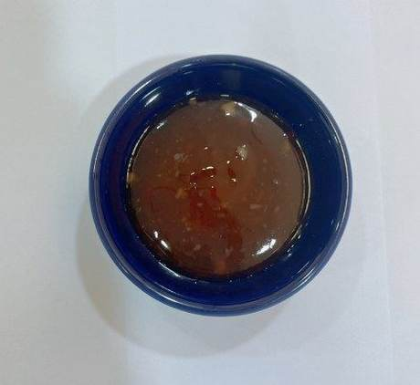
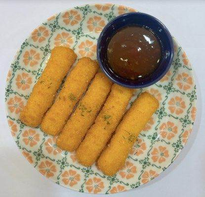
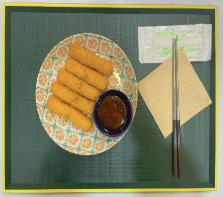

| 메뉴명 | 치즈스틱 |
|---|
| 판매가격 | 4,500원 |
|---|
| 원재료 | 치즈스틱, 스위트칠리소스, 파슬리 |
|---|
| 사용 부자재 | 덮밥접시, 소스볼 |
|---|
| 메뉴특징 | 짭짤한 치즈가 가득 들어있는 치즈스틱 |
|---|
조리방법

1
냉동 치즈스틱 5개를 180도 튀김기에 넣어 2분간 튀긴다.
※튀긴 후 기름 충분히 제거하기

2
소스볼에 칠리소스 20g을 담아 준비한다.

3
덮밥접시에 튀긴 치즈스틱을 올리고 파슬리를 뿌린 뒤, 한쪽에 소스볼을 올린다.
(*유산지 1장을 깔고 담기 가능)

4
트레이에 올린 뒤, 물티슈, 냅킨, 젓가락 또는 포크와 함께 제공한다.